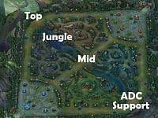

A játék 2009-ben jelent meg nagyjából 20 hőssel, ami mára már 150 lett, ebből is látszik, hogy rengeteget változott a játékmenet és a kinézete is. A technológia fejlődése és a cég növekedése miatt mára sokkal szebb és dinamikusabb a játék kinézete, bár egyesek szerint mar bőven túl sok hős van. A játék kinézetének változása
